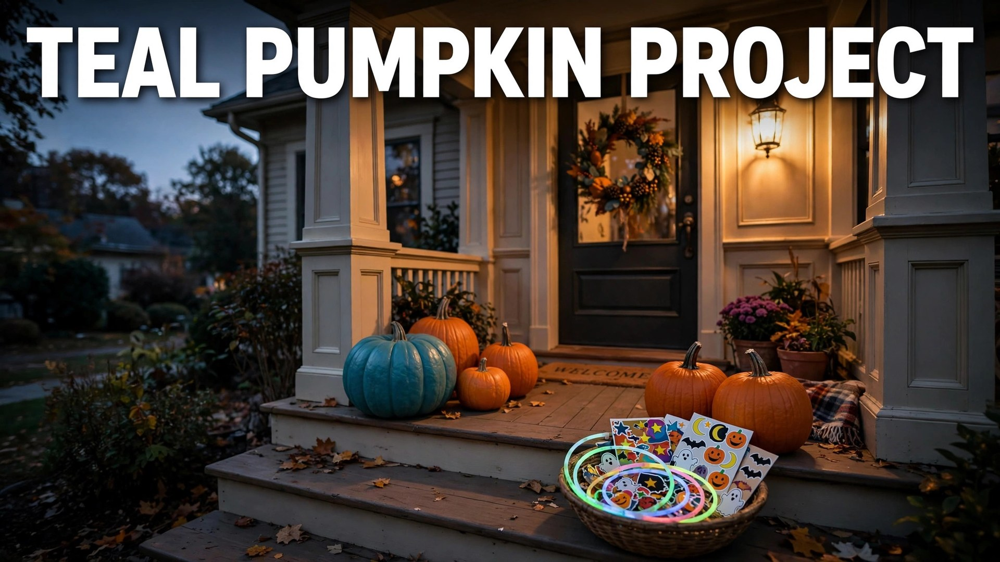

If you spot a teal pumpkin on a porch this Halloween, you are looking at one of the holiday's kindest traditions. The Teal Pumpkin Project, launched by Food Allergy Research & Education (FARE), is a simple promise: this house offers non-food treats so that kids with food allergies — and any child who cannot have candy — can trick-or-treat safely and feel included. One in thirteen children has a food allergy, and for them, a night built entirely around candy can feel more excluding than fun.
Joining takes almost no effort: paint a pumpkin teal (or print the free sign), stock inexpensive non-food treats, and keep them in a separate bowl. This 2026 guide explains what the teal pumpkin means, exactly how to participate, the non-food treat ideas kids genuinely love, and how to spread the word on your street.
What the Teal Pumpkin Means
Teal is the color of food allergy awareness, and a teal pumpkin is a universal signal: "non-food treats available here." It tells parents of children with peanut, tree nut, milk, egg, wheat, or soy allergies — the most common culprits in Halloween candy — that their child will not be turned away or handed something unsafe. It also includes kids with diabetes, celiac disease, sensory issues, or any other reason candy does not work for them. The project is not about banning candy; it is about adding an option. You still hand out your regular treats — you simply add a second bowl.
How to Participate in 2026
- Get the signal: paint a pumpkin teal with craft paint, buy a teal pumpkin decoration, or print the free Teal Pumpkin Project sign from FARE's website and tape it to your door.
- Buy non-food treats: stock up on small toys and novelties (ideas below). Dollar stores and bulk party suppliers are perfect.
- Use two bowls: keep food treats and non-food treats completely separate so there is no cross-contact.
- Offer the choice: let every trick-or-treater pick from either bowl — never assume which child needs the allergy-friendly option.
- Register your house: add your address to FARE's Teal Pumpkin Project map so local families can plan their route.
- Spread the word: tell neighbors, post in local parent groups, and mention it at school. The more teal pumpkins on a street, the better the night for everyone.
Non-Food Treat Ideas Kids Actually Love
The fear is that kids will be disappointed by non-candy treats. They will not — if you pick the right ones. The winners:
- Glow sticks and glow bracelets: the undisputed champion. Kids wear them immediately, and parents love the visibility boost.
- Stickers and temporary tattoos: Halloween-themed sheets are cheap in bulk and universally popular.
- Mini fidget toys: pop-its, squishies, and stretchy toys are playground currency.
- Bouncy balls and finger puppets: classic, cheap, and fun for all ages.
- Crayons, mini coloring books, and pencils: practical and parent-approved.
- Plastic vampire teeth and spider rings: Halloween-specific novelties kids keep for weeks.
- Bubbles and whistles: noisy, joyful, and memorable.
Avoid anything with small parts for toddlers, latex balloons (a common allergy itself), and anything sticky or messy.
Keeping It Safe: Cross-Contact & Choking Hazards
The whole point is safety, so sweat the details. Keep non-food treats in a separate bowl, ideally on the opposite side of the door from candy, and wash your hands between handling the two if you are refilling. Choose age-appropriate items — no marbles, tiny erasers, or small bouncy balls for the under-three crowd. If you offer both candy and toys, let the child choose; never decide for them based on appearance. And if a parent asks about ingredients in your candy bowl, answer honestly — "I am not sure" is a perfectly good answer that lets them decide.
Teal Pumpkin Beyond Your Porch
The idea scales beautifully. Schools can run teal pumpkin classroom parties where every activity is food-free. Trunk-or-treat organizers can designate teal trunks on the map. Workplaces and community centers can add a non-food table to their Halloween events. If you are a teacher or room parent, suggesting a teal pumpkin approach sidesteps the whole allergy-permission-slip headache. And on social media, posting your teal pumpkin with the project hashtag normalizes it — many families discover the tradition through a neighbor's photo.
Why It Matters More Than You Think
For a child with severe allergies, Halloween can be genuinely frightening for reasons that have nothing to do with ghosts. Parents pre-screen every piece of candy, many treats get thrown away uneaten, and some families skip trick-or-treating entirely. A teal pumpkin tells that child: this night is for you too. It costs a few dollars and ten minutes of effort, and it transforms someone's Halloween from an exercise in exclusion into a night of pure fun. That is an extraordinary return on a painted pumpkin.
Talking to Kids About Food Allergies
The Teal Pumpkin Project is also a teaching moment. Explain to your kids simply: some children get very sick from certain foods, so our teal pumpkin means everyone gets a treat they can enjoy. Let them help pick the non-food treats — kids love choosing glow sticks and stickers for others. If your child has allergies, role-play what to say at doors: "I have a peanut allergy — do you have non-food treats?" Most neighbors respond warmly. And model the key rule: never make a child feel different for taking from the teal bowl. When every kid gets offered the choice with the same enthusiasm, inclusion becomes the norm, not the exception.